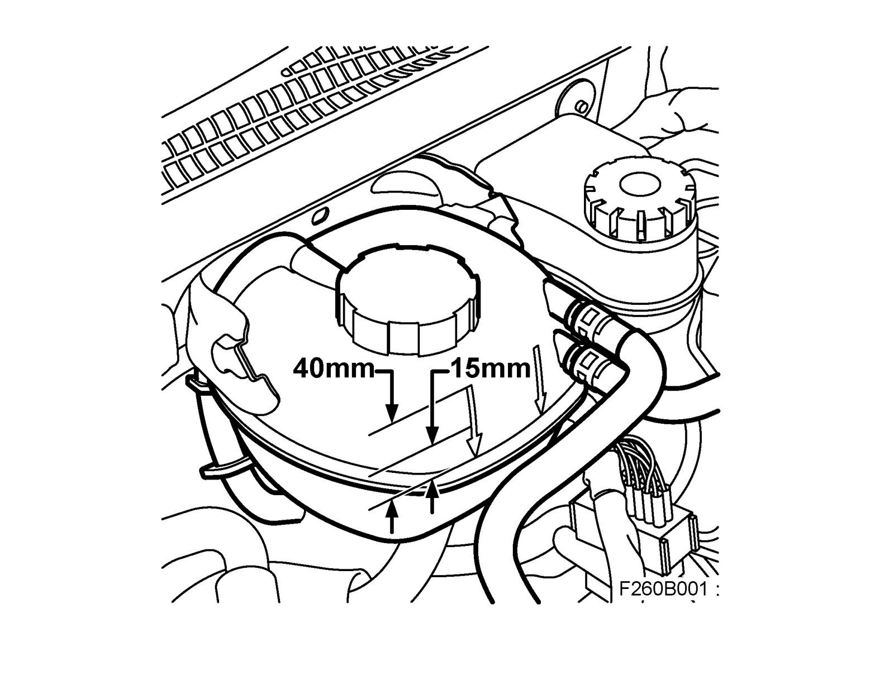

Procedures
Bleeding the cooling system when working with the oil coolerBleeding
Warning
The cooling system is under pressure. Hot coolant and steam can escape.
- Open the cap slowly to release the pressure.
- Carelessness can cause eye and burn injuries
Note
AC/ACC must be OFF.
1. Upon completion of repair work, fill with 40 - 12 799 124 Coolant to the top edge of the arrow on the expansion tank (= approx. 40 mm from "COLD" mark). See illustration.

2. Do not screw on the expansion tank cap.
3. Start and run the engine at varying engine speeds (max. 3000 rpm) until the thermostat opens and the radiator fan starts.
4. Fit the expansion tank cap.
5. Carefully rev the engine to 3000 rpm and then slowly lower engine speed to idling. Repeat this procedure at least 10 times. If the engine is revved quickly or engine speed exceeds 3000 rpm, air bubbles go back into the system and the system is no longer bled.
6. Switch off the engine and top up coolant as necessary to approx. 15 mm over the "COLD" mark on the expansion tank.